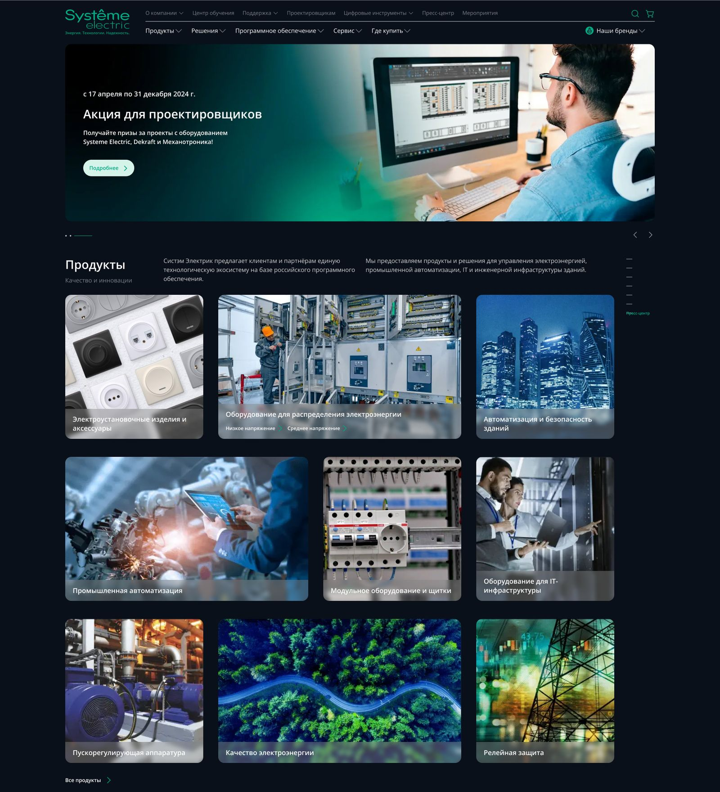
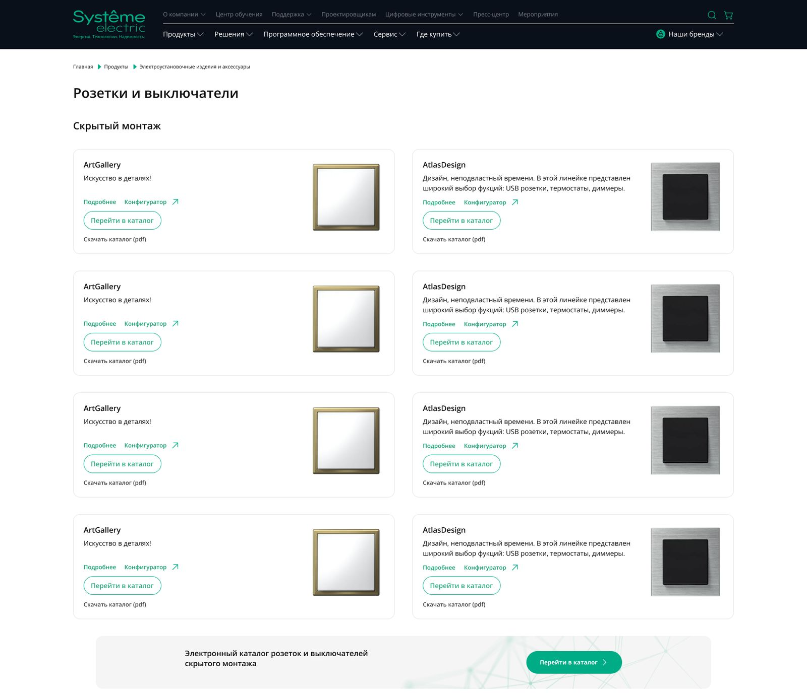
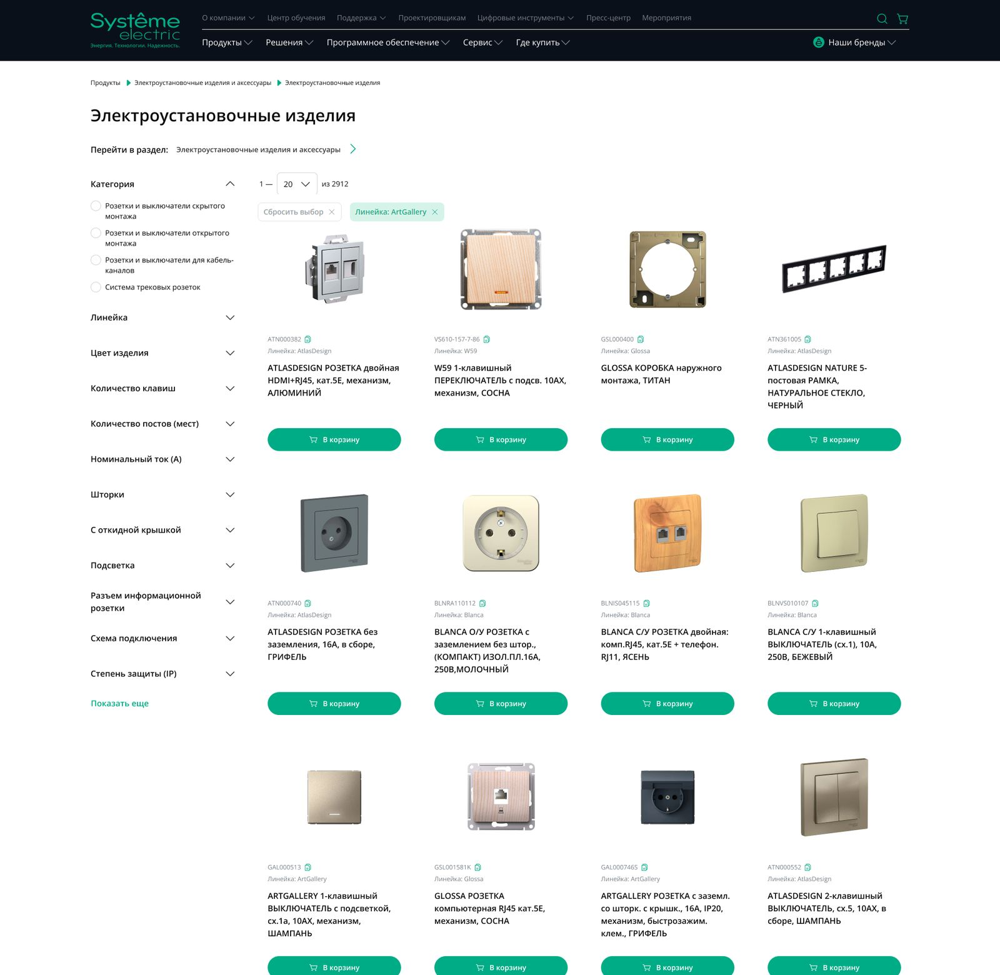
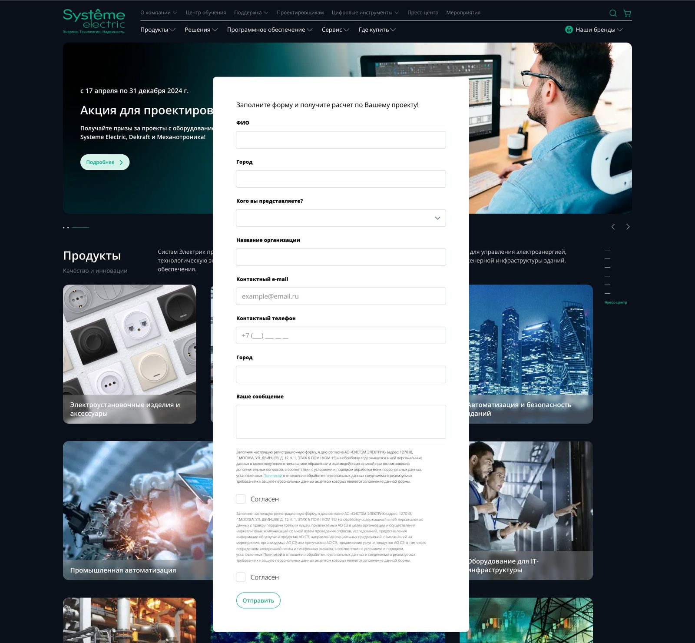

Систэм Электрик: от главной до каталога за три шага
Сайт systeme.ru производителя электрооборудования. Задача — разобрать два ключевых сценария посетителя: найти нужный товар и оставить заявку на расчёт проекта, а затем предложить, как сделать оба короче.
Роль
UX/UI-дизайнер, фриланс
Что делал
Разобрал текущие сценарии, сформулировал предложения и показал их в макетах
Экраны
Главная, страница линейки, каталог с фильтром, форма заявки. Десктоп 1920
Результат
Заказчик взял предложения в работу
[ что предложил ]
Пять изменений в двух сценариях
ГлавнаяПорядок блоков как в меню: сначала «Продукты»
КарточкиКартинки соответствуют тому, что внутри раздела
ПутьДо каталога три шага: раздел → линейка → каталог с фильтром
ЗаявкаФорма заполняется на сайте, без перехода на другую страницу
ФормаОдна форма вместо двух частей, поля и юридические согласия скомпонованы
[ сценарий 1 ]
Найти товар
1Главная
Главная повторяет логику меню: первым идёт блок «Продукты», потом решения и информация о компании. Посетитель, который пришёл за оборудованием, видит разделы каталога сразу под первым экраном. Картинки в карточках разделов подобраны под содержимое, поэтому раздел узнаётся по фото, без чтения подписи.

Главная: сначала продукты, картинки соответствуют разделам
2Страница линейки
Из раздела «Электроустановочные изделия и аксессуары» посетитель попадает на страницу с линейками, сгруппированными по типу монтажа. У каждой линейки короткое описание, фото и кнопка перехода в каталог.

Линейки сгруппированы по типу монтажа, у каждой — переход в каталог
3Каталог с фильтром
Кнопка ведёт в каталог, где фильтр уже выставлен по выбранной линейке. Посетитель сразу видит нужные товары и может уточнить подбор фильтрами слева.

Каталог открывается с фильтром по выбранной линейке
[ сценарий 2 ]
Оставить заявку на расчёт
Форма заявки на расчёт проекта открывается поверх текущей страницы, без перехода на другую. Вместо двух частей одна форма: контакты, организация и сообщение идут подряд, а юридические согласия собраны в конце, перед кнопкой отправки.

Одна форма поверх страницы, согласия собраны перед отправкой
[ результат ]
Предложения взяты в работу
Заказчик получил разбор двух сценариев и макеты изменений и взял предложения в работу.